Docker basicamente é uma plataforma que foi criada para Construir, Rodar e principalmente Transferir aplicações do nosso ambiente de teste para o ambiente de produção. O docker não nasceu pelo simples fato de que alguém quis criar, e sim pelo fato de que é muito comum nos depararmos com a seguinte situação: Estamos construindo uma aplicação em nossa maquina, desenvolvendo o front, a api, o banco, e quando vamos coloca-la no ar, ela simplesmente quebra e não funciona. E porque isso acontece? Quando temos uma aplicação em nossa máquina temos uma quantidade X de arquivos, e não necessáriamente quando enviamos para produção todos esses arquivos irão. Quando temos uma aplicação em nossa máquina, temos determinadas versões instaladas ex: Node 10.0.0, e quando enviamos para produção pode não ser a mesma versão, fazendo com que quebre. As vezes as configurações do nosso ambiente local sejam completamente diferente do ambiente de produção, fazendo com que quebre. É deste ponto que veio a ideia de criar o Docker, será que não conseguiriamos criar um ambiente virtual dentro da nossa máquina para que possamos ao invés de subir apenas nossa aplicação subir o ambiente inteiro ? Pegar nossa aplicação e coloca-la dentro de uma caixa, um container com tudo que nossa aplicação necessita para rodar sem depender de nada do servidor ?
Podemos colocar nossa aplicação para rodar na nossa própria máquina, dentro de um Container, e depois realizamos o upload desse mesmo container para um servidor. Ainda por cima com uma outra vantagem de que tanto o usuário quanto o servidor podem utilizar qualquer SO.
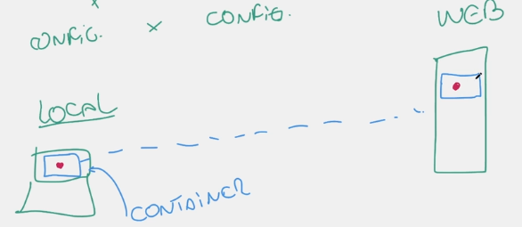Quando vemos pela primeira vez, podemos achar que maquinas virtuais e containers sao bem parecidos, mas qual suas diferencas? Para apontar as diferencas, vamos apontar primeiro o que sao as VM. Quando temos um servidor, possuimos um hardware no servidor, no qual instalamos um hypervisor no topo do hardware, que quando o instalamos ele nos dá a possibilidade de no topo instalarmos outros sistemas operacionais. Porém um desvantagem da VM é que eles são limitados em recursos. Por exemplo, se o hardware(servidor) possui 32gb de Ram, cada máquina virtual abaixo trabalhará utilizando 8gb, como ilustrado na imagem: Em vermelho temos nosso ambiente/enviroment para rodar nossas aplicações.
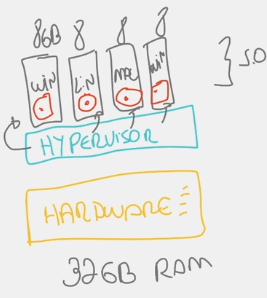Já nos Containers nós não precisamos instalar os hypervisiors, vem direto o sistema operacional, que geralmente é rodado em Linux, eem seguida vem direto nossos containers com nosso ambiente/enviroment.
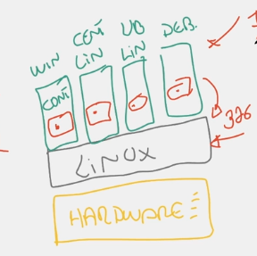Mesmo observando as imagens, as vezes fica complexo de entender a diferença. Deixando mais explícito, a maior diferença é que nos containers temos apenas um sistema operacional, que fica concentrando com os recursos apenas para ele, nos possibilitando rodar nossos containers de forma isolada. Ou seja, o consumo de recursos se torna muito mais eficiente. Sem contar que através do docker conseguimos inciar uma aplicação de forma muito mais rápida.
A partir do terminal podemos utilizar o comando docker version e caso ele responda, saberemos que o docker está funcionando.
Imagine que tenhamos uma apçicação com nosso Front, nosso Back, e nosso Banco de dados e que desejemos Dockerizar essa aplicação. O primeiro passo a ser feito é criarmos um arquivo chamado dockerfile. Dentro desse dockerfile colocaremos alguns parametros para que a imagem seja criada. Então ele será o responsável em tirar a aplicação e criar uma imagem dela. A criação dessa imagem é de acordo com o que está dentro do dockerfile, basicamente ele que irá coordenar como que essa aplicação se tornará uma imagem.
Dito isto sabemos que o dockerfile configura a criacao da imagem, mas o que estará nessa imagem ? Nela teremos algumas coisas como um pedaço do OS, Ambiente (Node por ex), Files(Arquivos da app, tudo que está dentro do back, fornt, db), Como criamos em node, provavelmente teremos bibliotecas, variáveis. Em resumo, criamos uma cópia perfeita com todas as dependencias que nossa aplicacao precisa para ser posta dentro do container.
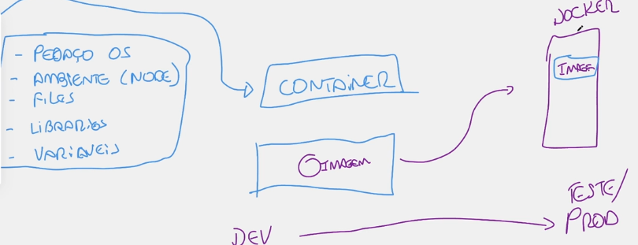Funciona igual o git/gitub só que para Docker. Imagine que tenhamos uma apliçacão já dockerizada em nosas máquina local, e gostaríamos de enviala para o servidor de producao. Esse processo até pode ser feito diretamente, mas nao é convencional.Entao como é feito? Nós pegamos a nossa imagem, enviamos para o nosso Docker Hub e de lá ela é enviada para o Servidor de Producao. E qual a maior vantagem ? Caso acoçteca algo com nossa maquina física, nossa imagem estará salva dentro do DockerHub.
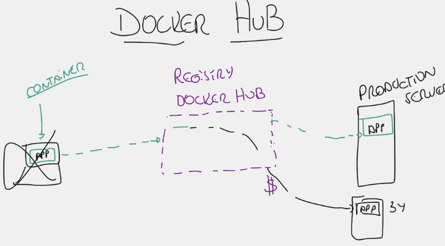Para criarmos uma primeira imagem para entender como funciona, o primeiro passo é criarmos uma aplicacao da mais simples possivel. Crie uma pasta, e dentro dela uma rquivo chamado docker.js, e dentro dele coloque uma linha: console.log('Ola Mundo'). Pronto, temos nossa aplicacao criada. Fora dela, crie outro arquivo chamado de Dockerfile que como estudamos acima, é onde iremos configurar a imagem a ser gerada.
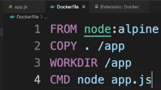Dessa forma já temos as configuracoes prontas, e em seguida basta darmos o comando para o docker criar uma imagem baseada nesse arquivo. O primeiro passo para darmos o comando é estarmos na mesma camada e no mesmo diretório onde está o arquivo dockerfile. Em seguida podemos roadr o seguinte comando: docker build -t hi-docker(nomedaImagem) . Caso voce tenha instalado o DockerDesktop através da interface poderemos ver nossa imagem criada, mas também poderemos verificar através do comando docker images.
Agora que já temos nossa aplação e ela foi convertida na nossa imagem docker, já podemos rodar a aplicacao, e assim será criada o container. Para isso voltamos ao terminal, e pedimos para ele rodar essa imagem com o comando: docker run nomeDaImagem e provavelmente ele irá nos retornar uma mensagem Ola Mundo mensagem posta dentro do console.log caso tenha dado tudo certo. A partir desse momento já temos nosso container rodando, com nossa imagem lá dentro.
Aqui sugerimos ir para o Curso basico de Linux Para depois Continuar em Docker.
A partir daqui aprenderemos a trabalhar com o Docker em si. Começaremos nos aprofundando em o que sao Images & Containers. O que é uma Imagem ? Uma imagem é o que nós chamaos de cut-down OS. Dentro de uma imagem temos um sistema operacional, suas bibliotecas, os arquivos da aplicacao(tudo que ela precisa para funcionar), e por último todas as variáveis de ambiente(EnviromentVariables). Em resumo, uma imagem contém tudo o que é necessário para uma aplicacao funcionar. Caso tenhamos em nosso computador uma imagem com a aplicacao rodando, consegiumos transferir essa imagem para outro pc sem problema algum. Já por outro lado, os Containers possuem uma outra funcao, é um ambiente isolado. O Container pode ser iniciado e pode ser pausado (start/stop) e isso pode ser feito através do terminal ou do dockersOFT. O container é um Processo que roda dentro de uma máquina. Quando temos nossa imagem pronta, criamos um container e esse container é um processo que roda e carrega a imagem. Exemplo:
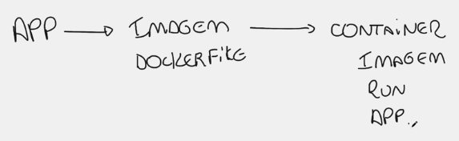Dando continuidade, falaremos um pouco da aplicacao. A partir adqui o objetivo é criar uma aplicacao, converter em imagem, gerar um container a partir da imagem e em seguida roda-la em nossa maquina local.
A partir daqui aprenderemos todo o passo a passo para configurarmos e criarmos uma Imagem dentro do docker. Como já vimos anteriormente, para comecar precisamos de um arquivo chamado Dockerfile, entao comecaremos aprendendo a como configura-lo. Quando criamos um Dockerfile a primeira coisa que precisamos especificar é o FROM que é qual imagem ele irá carregar, e também qual a plataforma (Node,Python, etc). Logo em seguida precisamos especificar a Workdir que é basicamente: imagine que nossa aplicacao esteja dentro do diretorio app. Entao, poderemos ali colocar /APP para que ele já entenda que trabalhará a partir dali, nos poupando de em qualquer comando ficar digitando na mao o /app. Logo em segguida temos o Copy / Add que servem para copiar ou adicionar todos os arquivos que fazem parte da aplicacao dentro da nossa imagem. É aqui que enviamos tudo que for necessário e que estiver no diretório local para a imagem. Em seguida temos o RUN que serve para rodar a aplicacao ou rodar o processo, serve para colocar em funcionamento. Também temos o ENV que sao as configuracoes de ambiente, que em oturas palavras é : o que que eu preciso dentro do linux para rodar essa aplicacao. Também temos o Expose que é o responsavel por colocar a porta em que a aplicacao irá rodar. Também se for necessário podemos informar o USER que é qual usuário irá executar essa aplicacao. Depois que a aplicacao estiver rodando, as vezes precisaremos rodar alguns comandos através do CMD ou EntryPoint. Esse é basicamente tudo que precisaremos entender para trabalhar com Docker. Basicamente de início parece "complicado", mas rapidamente nos aprofundamos. Abaixo o RESUMO:
FROM: Qual imagem(Ubuntu,Apache) e qual Plataforma(Node,Pyth)
Workdir Diretório inicial da qual partiremos os comandos.
Copy/Add Adicionar & Copiar tudo o que for para dentro da imagem.
RUN Rodar o processo/aplicacao.
Env Tudo que o linux precisará para rodar a aplicacao.
Expose Define em qual porta irá subir
User Qual usuário poderá acessar
CMD/EntryPoint Executar comandos após aplicacao estiver rodando
Antes de escolher a imagem precisamos ir na raiz da nossa aplicacao e nele criarmos nosso arquivo Dockerfile. O próximo passo, é analisarmos qual o sistema que nossa aplicacao está rodando (node?). Depois de ver isso, precisamos nos certificar qual versao do node foi desenvolvida a aplicacao. Após saber isso, podemos ir no site DockerHub e selecionar a imagem do NODE. Em seguida, podemos clicar em Tag, e procurar pela versao do node que desejamos. Ele irá apresentar diversas opcoes. Quanto menor, mais estavel e mais compativel for, melhor. Em seguida basta copiarmos o nome, ex: 12-apine3.14 e colocarmos dentro do nosso FROM no DockerFile.
Após termos nossa imagem devidamente configurada através do FROM, o próximo passo é copiar os arquivos da aplicacao pra dentro da imagem. Ou seja, instruir o dockerfile através do Copy. Utilizando o COPY iremos copiar todos os arquivos incluindo pastas e subpastas para o diretório App por ex. Porém, e se precisarmos copiar um arquivo externo ? Como na internet por ex? nesse caso utilizaremos o ADD . Também utilizamos o ADD quando queremos copiar arquivos compactados, e ele automaticamente já irá descompactar o arquivo dentro do diretório em questao. Em resumo, se for uma cópia simples usamos o Copy, se for algo de um site, ou zipado, utilizamos o ADD.
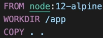Aqui iremos instalar todas as dependencias que a nossa aplicacao precisa para funcionar normalmente. Todas as dependencias precisam estar funcionando antes do usuário tentar executar o processo. No ALPINE
Muitas vezes precisaremos
Quando estamos rodando um container dentro do nosso PC com uma aplicacao web, e em seguida abrimos o browser para acessar a aplicacao do container, precisamos em algum lugar setar qual porta do container estará aberta. No caso, setaremos dentro do EXPOSE.
É a partir daqui que configuramos que ele execute a aplicaao, geralmente dentro da pasta SRC, com o comando. Porém precisamos passar essa informacao no formato do CMD. precisamos entender que o RUN é executada enquanto a imagem está sendo construída, já o CMD é executada após o a imagem estar construida.
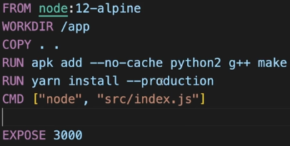Utilizar os comandos dentro de umc ontainer através do ROOT é uma grave falha de seguranca, por isso o ideal é criarmos um usuario e um grupo para subir e utiliza-lo no container.
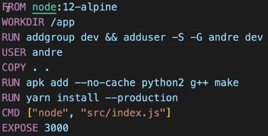Nosso container através do EXPOSED está escutando na porta 3000, porem precisamos informar ao Mac que a porta 3000 do container está mapeada com a porta 30000 do container. Para isso construimos a imagem normalmente, e em seguida executamos mapeando a porta com o comando: docker run -dp 3000:3000 nomeDaImagem. Pronto. Nossa aplicacao estará rodando.
Conforme vamos evoluindo e alterando o sistema, teremos provavelmente diversas imagens da mesma aplicacao, porém com versoes diferentes. Quando executamos o comando docker Image podemos listar as imagens e a sua respectiva tag. Utilizando o comando docker build -t app:nomeDaTag podemos criar uma nova tag. Porém quando damos denovo o docker images perceberemos que a latest nao será excluida, na verdade nao atualiuizamos, e sim criamos outra. Para alterar, colocamos docker image tag app:nomeDaTagAtual app:NomeDaNovaTag.
Chegou a hora de compartilhar a nossa imagem, fazer um backup da imagem, ou até mesmo apenas fazer o upload. Uma vez que ela estiver no dockerhub, podemos fazer o download dela em qualquer outra máquina. Para isso, precisamos primeiro ir no DockerHub e em seguida poderemos criar repositórios, públicos ou privados. Em seguida voltamos ao nosso terminal e listamos nossas imagens, e pegamos a versao mais atual (através da TAG). Agora adiconaremos uma nova tag que é igual ao seu repositorio criado. por ex: guittgui/app . Para isso colocamos o comando: docker image tag IMAGEID guittgui/app:v1 pronto, agora temos a versao 1 renomeada. Agora já estamos prontos para fazer o upload, e para isso primeiro realizamos nosso login: docker login e em seguida pro upload colocamos o comando: docker push nomeDoRepositorio:TAG. . A partir desse momento já podemos conferir no nosso repositório no dockerHub.
Agora que ja vimos tudo necessário sobre Imagens, comecaremos agora a estudar sobre os Container. Primeiro passo é sabermos como iremos iniciar um container. Para rodar/Iniciar um container utilizamos o comando : Docker run nomeApp:v2 e é simplesmente isso. Porém precisamos lembrar que precisaremos redirecionar a porta (do mac para o container). Iremos reparar que ao rodarmos o comando desse jeito, o terminal irá ficar "congelado" sem que possamos fazeer nada, e ao apertarmos ctrl + c ele irá encerrar. Logo, precisamos utilizar a tag -d para que ele execute o container só que estará em background. docker run -d nomeApp:v2. Cada container que iniciamos o docker dá um nome randomico para nossos containers, logo será uma boa prática alterarmos esse nome para que possamos nos localizar melhor. Para isso, utilizamos o comando: docker run -d --name nomeDoContainer nomeApp:v2 . Ou seja, aqui podemos ver que podemos iniciar um container de diversas formas, porém uma das mais utilizadas é a última que vimos, rodando em background e o nomeando.
Agora que já possuímos um container rodando, o que está acontecendo dentro dele? temos erros ? temos mensagens ? Existe uma maneira que conseguimos verificar os LOGS desses containers, através do comando: docker logs -f idDoContainer, a partir de agora se algum log acontecer ele irá mostrar em tempo real. docker logs -n 10,20,30 Através desse comando ele irá lhe mostrar os últimos 10, 20 ou 30 logs do seu container. docker logs idDoContainer Mostra todos os logs existentes do container. docker logs -t idDoContainer irá mostrar todas as informacoes de cada Log. Em resumo, sempre que alguma coisa começa a dar errado o primeiro passo que deveremos fiscalizar são os Logs.
Já chegamos a estudar sobre portas anteriormente, porém vamos recapitular. Primeira coisa que precisamos saber é que a porta do nosso container não é a mesma que a porta do nossa mac, mesmo possuindo o mesmo "número". Por exemplo, ao colocarmos uma aplicacao dentro de um container, e através do expose setarmos para rodar na porta 3000, é necessário que façamos o redirecionmaneto da porta 3000 do nosso mac, para a porta 3000 do nosso container, para só então consigamos acessar a nossa aplicacao via docker. Vale ressaltar que não precisa ser a mesma porta , por exemplo, podemos redirecionar nossa porta 3010 para linkar com a porta 3000 do container. De qualquer forma, o importante é sabermos que precisamos fazer o MAPEAMENTO. E como podemos fazer isso? docker run -d -p numeroPortaMaquina:numeroPortaContainer . Ficando por exemplo: docker run -d -p 3010:3000 --name nomeImagem:v2.
Imagine que o nosso docker já esteja rodando, como podemos executar um comando no nele ? Através do docker ps podemos listar todos os containers. Imagine que tenhamos um container chamado banana, através do comando docker exec banana ls pronto, ele irá mostrar tudo que existe dentro do root do linux que está dentro do container banana. Em resumo: docker exec nomeContainer QUALQUERCOMANDOLINUX podemos fazer o que quisermos dentro de um comando.
Através do comando docker stop nomeDoContainer esse container irá parar de ser executado. Através do Docker PS ele ainda será mostrado, porém com o status de parado. Por isso, para ele rodar denovo, basta aplicarmos o comando docker start banana.
Para removermos um container podemos fazer de duas formas, através do terminal podemos setar o comando: docker rm nomeDoContainer. Porém dependo da hora que fizermos isso ele nos setará um error informando que não podemos remover um container rodando, entao podemos primeiro parar o container através do docker stop e em seguida remove-lo ou entao podemos remove-lo de forma forcada, como o comando: docker rm -f nomeDoContainer. Dessa forma ele forcara a remocao independente de estar rodando ou nao.
Imagine o seguinte cenário: Temos um container e criamos dentro dele 02 arquivos. Em seguida resolvemos remover o container. Quando criarmos outro, ele terá esses arquivos? A resposta é não pois um container sempre é criado baseado em sua imagem e como na imagem nao temos os arquivos, logo no container também não terá. Para isso temos o que chamamos de Volume, que podem ser local ou em nuvem. Para isso, precisamos primeiro criar um volume, depois vincula-lo a um container. Para criarmos o volume, utilizamos o comando: docker volume create app-dados. Para verificarmos o que há dentro dele, podemos usar o comando: docker volume inspect app-dados assim teremos informacoes. Tendo o volume criado, basta colocarmos um container para rodar com o comando: docker run -d -p 3000:3000 --name nomeContainer -v nomeDoDiretorio:/dioretorio app:v2. Em geral, os dados do volume são persistenets já os daos de um container não.
Também é possível copiarmos arquivos do nosso host local para um container, e também do container para nosso host local. Por ex: Podemos acessar um container, criar um arquivo .txt dentro dele, e copia-lo para nosso host local. Para isso podemos utilizar o comando docker cp. Comecamos colocando a origem e em seguida o destino. ex: docker cp nomeImage:/app/arquivo . (desitno). Da mesma forma podemos copiar do mac para dentro do container, só mudando a origem e o destino.
Aqui iremos começar a falar de algo extremamente importante chamado de Docker Compose. Para que ele serve? Quem é ele? Imagine que tenhamos uma aplicação com o backend, o frontend e nosso banco de dados. Será que vale a pena subir um container só com todo o conteúdo ou não seria melhor subir de forma separada ? cada funcionalidade em seu "container"? Quem nos permite trabalhar com múltiplos containers é o famoso Docker Compose. O primeiro passo que precisamos para trabalhar com DockerCopose é a sua instalacao clicando neste LINK AQUI. Caso tenhamos instalado em nosso computador o DockerDesktop consequentemente o DockerCompose já está instalado. Caso contrário na documentação acima é possível encontrar o passo a passo.
Em resumo, o Docker Compose é um DockerFile turbinado, pois nada mais é do que um arquivo onde iremos colocar tudo do frontend, tudo do backend, tudo do db. Em resumo, temos um arquivo que "configura" três containers ao mesmo tempo. E quando utilizarmos o comando docker-compose up ele irá construir todos os containers configurados devidamente. Logo, o que tivemos de "novo" aqui, foi o fator de configuração do DockerCompose quantos containers, quais containers, nomes, portas, configuracoes etc. Porém ao olharmos afundo, o docker compose possui uma instenção chamada : YML. YAML é uma linguagem de programação de date serialization, ou seja, é muito utilizada para escrever configuracoes. Ele consegue escrever instrucoes para que outros aplicativos possam ler as instrucoes de cima para baixo. Abaixo temos um exemplo de código em yaml:
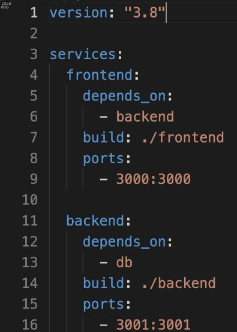Quando temos que escrever um arquivo de configuracao, precisamos saber que ele será lido de cima para baixo. Ele também tem um processo de organizacao chamado de Identação que significa que cada espaco de tabulacao será algo: "Importante". Logo, tudo que está digitado abaixo de services no exemplo acima, fazem parte do servico. No caso, quem sao os servicos ? FrontEnd & BackEnd. Por esas lógica, dentro do front end, temos dependson, build, ports. E assim por diante. SERVIÇOS POSSUEM FrontEnd, BackEnd, DB. Dito isto, iremos começar a construir um DockerCompose.yml do zero, para que aprendemos exatamente o passo a passo necessário para que possamos construir.
A primeira coisa que precisamos setar em sua configuração é a VERSION que indo até o site oficial podemos nos informar em qual é o dp mais atual. Em seguida, começamos a setar nossos Services, que também serão os nomes dos containers, e para finalizar precisamos setar os Volumes que geralmente é chamado de acordo com o nome geral da sua aplicação.
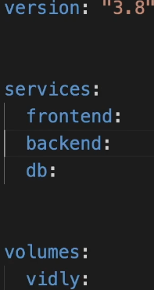Agora que já aprendemos o "cranio", precisamos comecar a preencher as informacoes da nossa aplicacao back/front. Aqui usaremos o Front como exemplo. Primeiramente precisamos configurar a sua BUILD. Quando entramos na sua pasta, la possuimos o dockerfile dele, entao, podemos no build ou setar na mao, ou informar: utilize a configuracao do dockerfile na pasta build, utilizando:
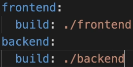Agora que já temos a build, precisamos falar das nossas portas e seu devido "mapeamento". Vale lembrar SEMPRE que esse mapeamento de portas do DockerCompose é 100% baseado no que está dentro do DockerFile de cada servico (front/back).
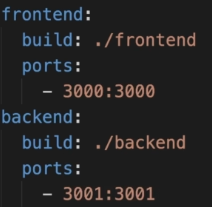Uma outra peculiaridade que precisamos nos atentar, é que o nosso backend precisa estabelecer uma conexão com o banco de dados. Logo, precisamos setar o seu enviroment, onde colocaremos seu dbURL e seu Command.
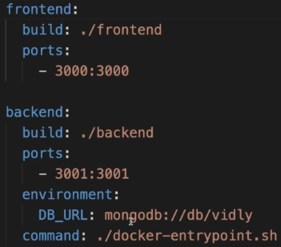Uma última coisa que está faltando aqui, é colocarmos os depends_on que é basicamente sinalizar que o Front depende do Back, que o Back depende do DB.
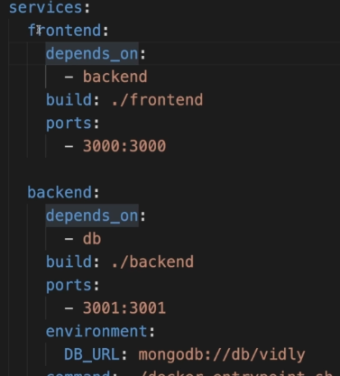Tendo finalizado os dois primeiros servicos, precisamos configurar nosso DB. No db, colocamos nossa imagem de acordo com a documentacao. As portas, cada DB possui sua porta em específico, e o volume basicamente lincamos com o volume criado, para que tenhamos um diretório para armazenar caso nossa aplicacao/container pare de funcionar.
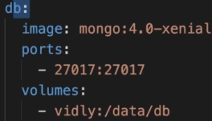